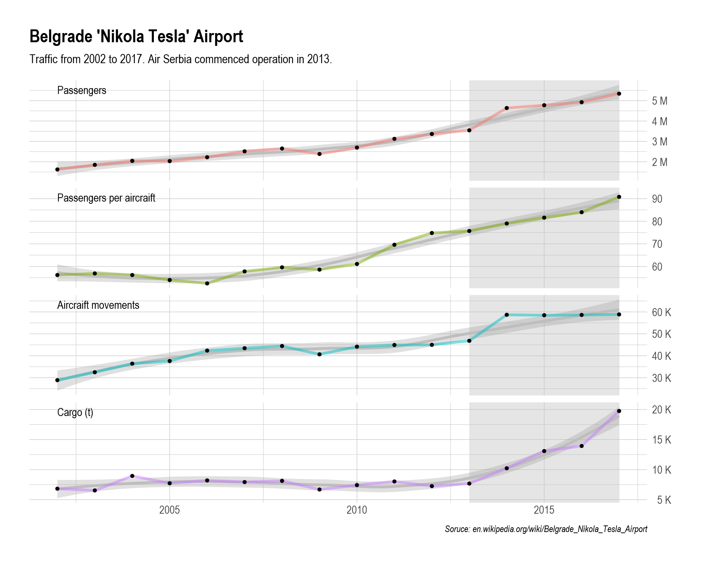
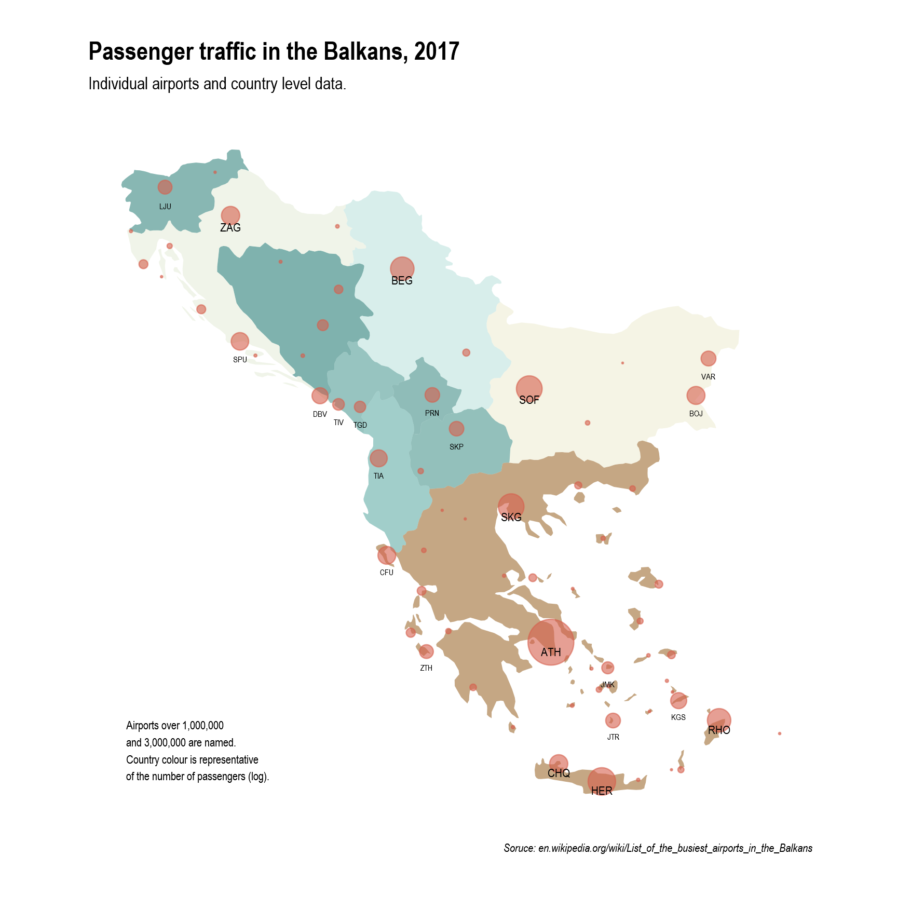
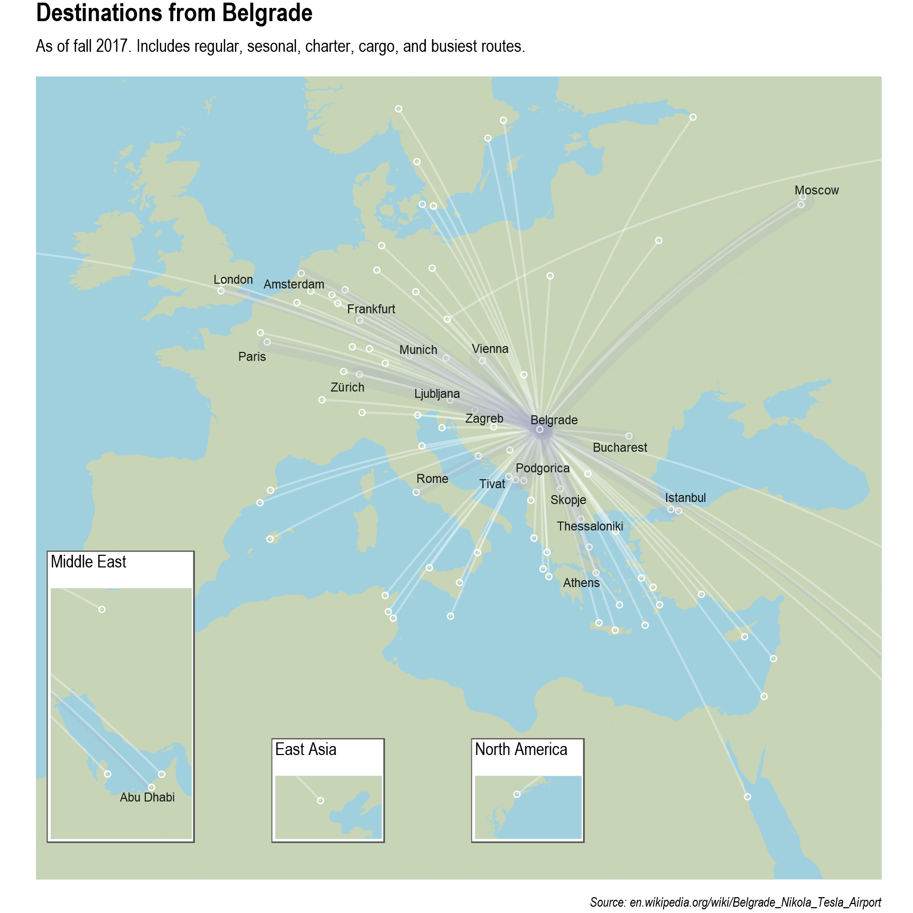
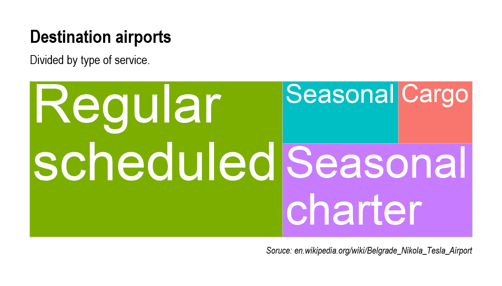
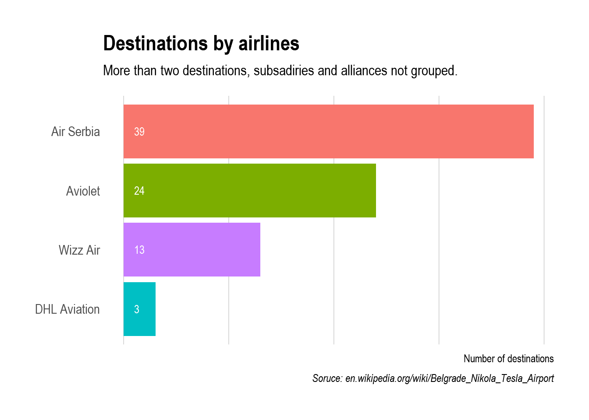
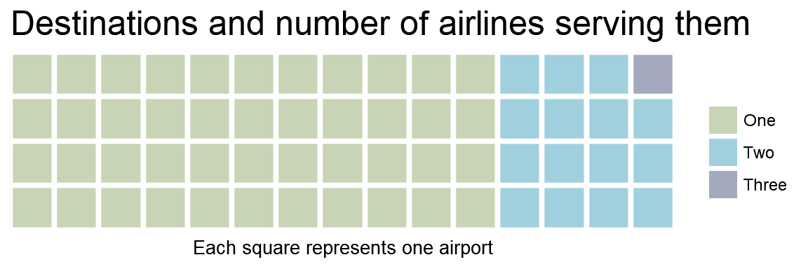

This is a simple demonstration where I present some of my technical skills in obtaining, analyzing, and presenting data in R.
Belgrade Airport is the main airport in Serbia, located some 15 km from the downtown of Belgrade. It was opened in 1962, following the closure of the pre-war airport in the current neighborhood of “New Belgrade”. Initially, the airport’s growth culminated in late 80s, when it served as a main hub of Yugoslav Airline Transport, serving it’s large national and international network, and number of foreign carriers. At the time, destinations included cities in North America, Europe, Asia, Africa, and Australia.
Following the wars in the breakup of Yugoslavia and international sanctions, traffic sharply declined in the 90s until October political changes of 2000. What follows is the brief analysis of current traffic and trends in the past 15 years.
Looking at data from 2003, we can identify a steady growth with several caveats.

First, in the past few years there is a rapid growth of cargo transport. Second, we can observe a small “dent”" in traffic, associated with 2009 and economic crisis. And finally, the transformation of the old JAT into Air Serbia did not have a profound effect on overall trend, but its start of operations is identifiable with spike in aircraft operations and a slight jump of passenger traffic.
In the Balkans, Serbia has fourth busiest air passenger traffic, which is almost exclusively driven by Belgrade Airport. It follows tourism-heavy EU airspace of Greece, Bulgaria, and Croatia. Greece alone has almost double the traffic of all other countries combined (59M compared to 39M).

In 2017, Belgrade “Nikola Tesla” Airport was the fifth busiest in the region, with 5.3 million passengers. While Athens had four times more passengers, Belgrade was in the region of other high-performing airports with six and seven million passengers—Thessaloniki, Sofia, and Heraklion—and had 40,000 more passengers than Rhodes.
Currently, around 90 airports on four continents are reachable from Belgrade, most of them through direct lines, except for Santorini and Beijing. Compared to 80s, the number of direct lines has increased while the variety of the long-distance destinations has decreased. For example, currently there is a direct line to New York (three times a week), and several daily flights to Amsterdam, Munich, or Paris. Thirty years ago, even flights to European destinations were sometimes operated via Zagreb, and more often than not, flights to New York, Toronto, Chicago, or Los Angeles. This is, for the most part, on par with global trends in aviation and the rise of the huge airport hubs—such as Dubai, Munich, or Amsterdam.

Lines are centered around areas with large Serbian diaspora (Germany, Scandinavia, Italy), regional destinations, hubs and cities of economic and political importance, and holiday destinations in Mediterranean.

Traffic at Belgrade Airport is fairly seasonal, with close to half of all passenger destinations served being either charters or summer lines. Cargo traffic is considerably small, although, the last few years indicate that it is on rapid rise.

Destinations are dominated by Air Serbia, and its subsidiary Aviolet, with only Wizz Air—a low-cost airline—having somewhat developed destinations from Belgrade. All other passenger airlines serve fewer than three destinations. This, of course, does not include seasonal and charter traffic.
This lack of strong competition on individual lines is further evident in the fact that only one destination—Tel Aviv–Ben Gurion—is served by more than two companies, and 44 regular scheduled lines have only one airline operator. Granted, this analysis does not include alliances, subsidiaries, and code-shares which might provide some nuance to this interpretation, or more importantly grouping airports that are close by.

Five tables with data were scraped from Wikipedia pages: passenger destinations, cargo destinations, traffic, and busiest routes for Belgrade, and airport traffic for the Balkans.
Tables were transformed, combined, and separated for presentation of data. The most complex were passenger destinations, which is a two-column table with airlines and grouped destinations separated with commas and annotations. All these airports were separated and classified: regular scheduled, seasonal, and seasonal charters.
Geographic position of the airports was accessed through AIR-PORT-CODES API, where some systemic and manual modification of airport names were necessary since Wikipedia entries differ from the names in their database. City locations were obtained with ggmap.
Figures were created using ggplot2, flight pats using geosphere, treemapify for tree map, waffle, and for theme hrbrthemes.
Code will be on github soon.